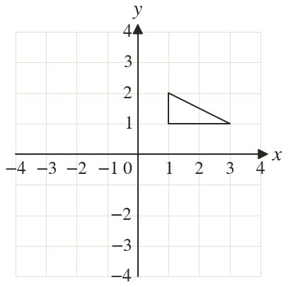
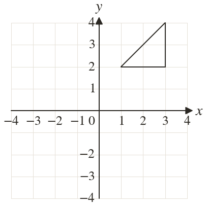
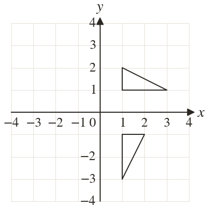
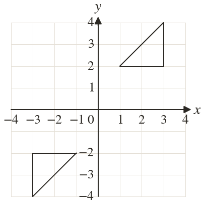

Westonbirt Maths · Symmetry and Transformations
Rotating About a Centre
Name: ______________________ Date: ____________
1
Rotate the triangle clockwise about
2
Rotate the triangle about
3
Rotate the point through anticlockwise about
4
Rotate the point through about
5
Rotate the point through clockwise about
Ext
Which rotation about maps onto ?



